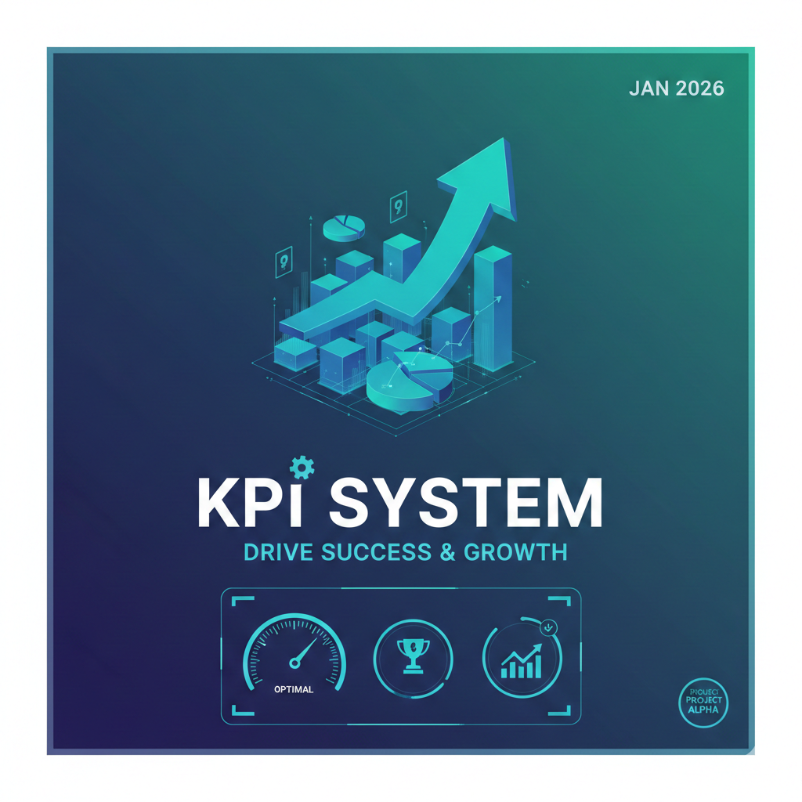
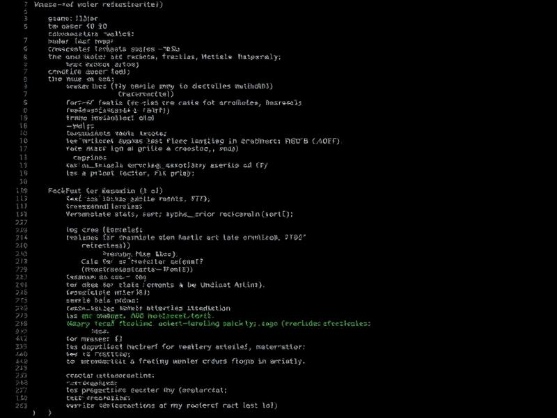

Security & Hardening
CIS-benchmarked Linux baselines, SELinux/AppArmor policy, patch pipelines, secrets rotation, firewall and SSH lockdown.
- CIS & STIG compliance
- SSH + fail2ban lockdown
- Vulnerability scanning
I help startups, SaaS companies, and growing teams secure Linux infrastructure, automate DevOps pipelines, and build systems that stay up - so you can focus on shipping products instead of chasing fires.

I'm Saraj Menghwar, a Computer Science graduate from Tharparkar, Sindh, now based in Lahore. Over 1.5 years of hands-on work, I've focused on hardening Linux infrastructure, securing cloud environments, and designing DevOps pipelines that actually survive production.
I work with startups and growing teams - shipping reproducible infrastructure, CI/CD that deploys in minutes instead of hours, and monitoring that tells you about problems before customers do.
Aspiring to become Pakistan's first chess Grandmaster. I spend my evenings between a terminal and a chessboard.
Average monthly cloud spend reduction across right-sizing, reserved capacity, and dead-resource reclamation.
Across production Linux fleets with redundant load balancers and HA databases.
From commit to production via hardened CI/CD — down from multi-hour manual releases.
CVE exposure reduced via patch pipelines, CIS hardening, and secrets rotation.
CIS-benchmarked Linux baselines, SELinux/AppArmor policy, patch pipelines, secrets rotation, firewall and SSH lockdown.
GitHub Actions, GitLab CI, and Jenkins pipelines that test, scan, and deploy without drama. Zero-downtime releases included.
AWS, Azure, and GCP architecture that's secure by default, reproducible with Terraform, and priced for reality.
Docker images that are small, signed, and scanned. Kubernetes clusters you can actually operate — with RBAC, network policies, and GitOps.
Prometheus + Grafana stacks, Loki/ELK pipelines, and alerting that pages humans only when it matters.
Ubuntu, Debian, RHEL, CentOS, and Alpine — configured, patched, and documented so your next engineer doesn't panic.


Tell me about your infrastructure — where it hurts, what's breaking, or what you want to build. I reply within a business day.